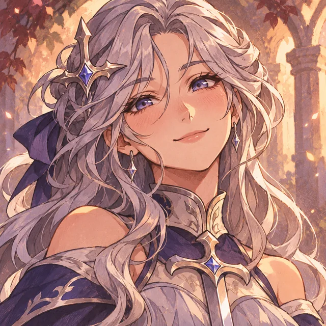

Aún queda historia
por escribir.
No necesitas ganar cada batalla. Hoy basta con elegir un paso que te cuide.
Selecciona tu meta y descubre a qué hora la completarías.
Registrar tus decisiones también forma parte de tu aventura.
✧ Elige quién te da ánimos
486 frases originales inspiradas en tus historias favoritas. En «Todas» cada pulsación sortea una voz y una frase sin secuencia fija; no se repiten hasta recorrer la colección.
📝 Aquí también caben tus días difíciles
Escribe una victoria pequeña, una emoción o una razón para seguir. No necesitas escribir algo perfecto.
La Senda del
Ermitaño.
El mundo es inmenso, pero también lo es tu mundo interior. Dedica un capítulo a pensar, leer, estudiar o escuchar.
El refugio del Ermitaño
Leer una página, escuchar una canción con atención o sentarte a respirar también escribe historia.
📚 Registrar sin cronómetro
Si terminaste un capítulo o estudiaste sin iniciar el reloj, también puedes guardar esa experiencia.
☾ Crónicas del Ermitaño
Tu aprendizaje, tu música y tus momentos de calma. No hay rachas obligatorias.
La Marcha.
Camina, fortalece tu cuerpo y escribe nuevas páginas de tu aventura. Sin rachas obligatorias.
Mis pasos del día
La universidad, los traslados y las vueltas de la vida también cuentan en tu aventura.
📜 Crónicas de tus pasos
⚙ Configura tu caminata
La caminadora calcula una distancia aproximada con tu velocidad. Para exteriores puedes escribir la distancia real al terminar.
💪 Entrenamiento de fuerza
Registra tus series y repeticiones. También cuentan las pequeñas victorias.
⏱ Descanso entre series
Un temporizador opcional para tu siguiente serie, sin prisa.
📜 Tu bitácora de entrenamiento
Las marchas y sesiones de fuerza quedarán aquí. Los registros también cuentan para tu hoja de personaje.
Lo que llevo
dentro.
No hace falta estar bien para merecer escribir tu historia.
Después de la jornada
El taller quedó atrás. Entre amigos, conversaciones y una noche merecida, deja que Silan, la Princesa y la Compañera te reciban como al caballero que vuelve de su guardia.
Sin puntos por beber ni conteo de bebidas: celebramos tus historias y la compañía.
¿Cómo te sientes ahora?
Mis páginas anteriores
El caballero.
Tu hoja de aventurero sigue aquí. Ahora puedes cultivar dos sendas independientes: la fuerza del cuerpo y la sabiduría de la mente.
Resiliente
Tu compañera de aventura
Su historia evoluciona contigo. Cuando crece tu héroe, desbloqueas nuevas conversaciones, atuendos y celebraciones.

🏅 Distinciones ganadas
Logros por participar y perseverar. No hay penalización por descansar ni obligación de mantener rachas.
Mi registro de peso
Anota tu peso en kilogramos y observa la tendencia a lo largo del tiempo. Tus registros pueden aportar experiencia al héroe sin convertir cada kilo en una competición.
Tu primer registro abre este capítulo.
+10 XP por el primer registro y cada nueva semana registrada. +15 XP por una tendencia gradual observada durante al menos cuatro semanas. No se premia bajar más rápido ni se pierden puntos por fluctuaciones.
Mis mediciones
✧ Cómo se gana experiencia
La senda física suma experiencia por marchas, fuerza y pasos cotidianos; la mental, por lectura, meditación, estudio y por registrar ayunos con constancia (máximo 15 XP semanales). El peso suma una pequeña XP general. Completar una meta no premia ayunar más tiempo: 12 y 24 horas pueden dar exactamente la misma XP.
Crónicas de ayuno
Tu historial anterior sigue aquí, sin perder registros.
Mis sesiones
La fuerza de
tu palabra.
Elige el reto que quieres registrar y sigue tu camino con determinación.
Meta de ayuno
Elige tu objetivo. La constancia construye carácter; la prudencia protege tu camino.
ⓘ Información sobre el ayuno
El ayuno es una herramienta opcional, no una prueba de valor. Si te encuentras físicamente mal, finaliza el ayuno y atiende tus necesidades; si los síntomas son intensos o persistentes, consulta a un profesional de salud. Metas largas no son necesarias para perder grasa.
Editar la hora del ayuno
Útil si empezaste antes de abrir esta app.
Si no hay un ayuno activo, esto iniciará uno desde la hora que selecciones.
⚔ Mi juramento
Una promesa para los días en que olvides por qué comenzaste. No tiene que ser perfecta.
Mis datos, mis decisiones
Todo queda guardado en este dispositivo. Sin cuentas, publicidad ni seguimiento.
🔔 Voces que llegan a ti
Elige tus mensajes de ánimo. Silan y compañía celebran tu progreso con determinación. Los avisos se comprueban mientras Yuno está abierta y al regresar a ella.
Límite actual: con GitHub Pages los recordatorios automáticos se emiten si tienes la app abierta. Al cerrarla completamente, los avisos programados requieren un servicio push adicional. No se enviarán mensajes atrasados en ráfaga.
✦ Tu aplicación, siempre contigo
Una vez instalada desde una dirección web, Yuno podrá recibir nuevas versiones sin reinstalar un APK. Tus notas se quedan en este teléfono.
Los cambios se buscarán cuando abras la aplicación con conexión.
Para instalarla en Android: abre su enlace HTTPS en Chrome → ⋮ → Instalar aplicación o Añadir a pantalla principal. Abre después el icono nuevo.
Tus datos antiguos del archivo HTML o APK no migran solos: usa Respaldar allí y Restaurar aquí. Los respaldos son privados: no los subas a GitHub.